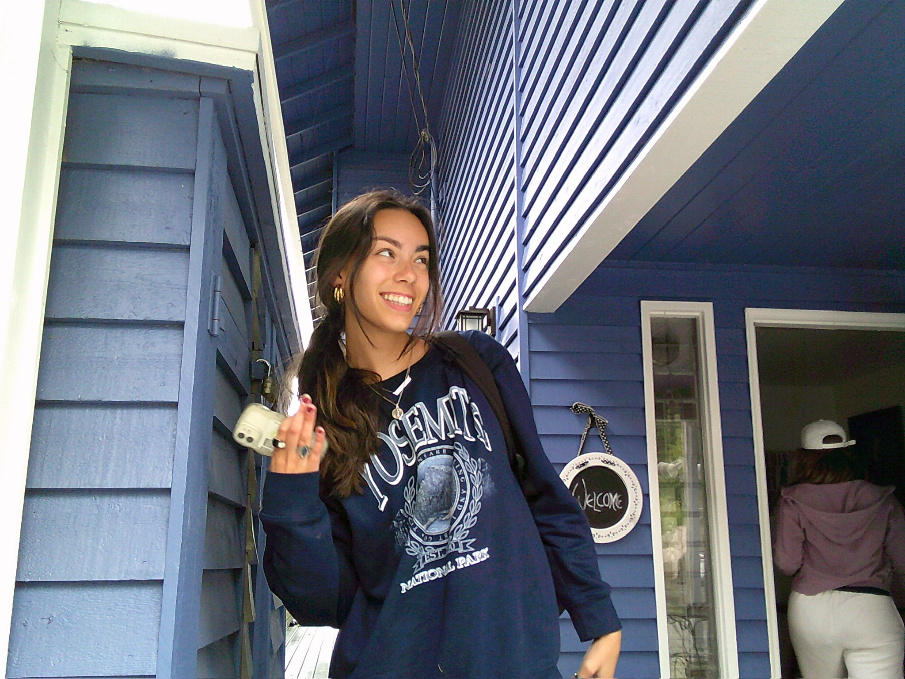

About the Author
Welcome to My Cinnamon Apple!

Hey! My name is Veronica and I'm a high schooler living in Seattle. I love to travel and visit the outdoors, especially with my dog. I am an avid deep breather and will always eat a cinnamon roll when given the chance. Currently listening to "UFO" by Olivia Dean and waiting for the newest "Wait Wait Don't Tell Me" episode to come out.
The blog covers a variety of topics, and each article will take you on a little adventure and leave you waiting for the next one.
Feel free to reach out with questions, comments, or suggestions at mycinnamonappleblog@gmail.com
← Back to Home